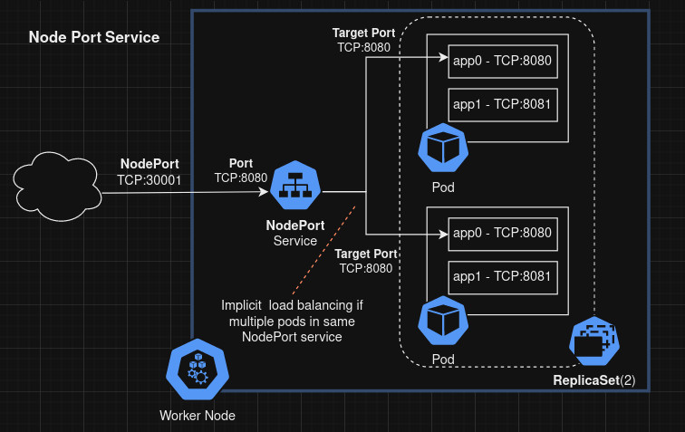

Kubernetes / K8s
Operations
ℹ️ There's also an official K8S cheatsheet here!
Set Default Namespace
Get pods with label
Run command/shell on pod
-it is needed if interactive shell is required
-c <CONTAINER_NAME> to specify a container in multi-container pod
kubectl exec -it POD_NAME -- /bin/bash
# Target specific container in multi-container pod with '-c'
kubectl exec -it -c CONTAINER_NAME POD_NAME -- /bin/bash
Get Logs of container
kubectl logs POD_NAME
# Target specific container in multi-container pod with '-c'
kubectl logs -c CONTAINER_NAME POD_NAME
List all containers
In a specific pod...
In all pods with a label...kubectl get pods -l KEY=VALUE -o json | jq '.items[] |
.metadata.name as $POD_NAME |
.spec.containers[] | {"pod":$POD_NAME, name, image}'
Refresh Pods/Deployment
Architecture
Services
NodePort
Exposes the service on each Node's IP at a static port ("NodePort") 
Build
Patterns
Dry Run
Helpful to generate K8S YAML config files of ConfigMaps of raw file data as the YAML config for ConfigMap does not support file/path references.
This example creates a ConfigMap YAML config file by referencing the content of an actual file (config.ini) from the local system.